Designing clarity for systems that can't afford confusion.
Twenty-plus years leading product & UX for regulated platforms, financial tools, and emerging tech — where ambiguity is expensive and trust has to be built one screen at a time.
A career spent translating messy systems into things people actually understand.
I started in Toronto's agency world at the height of the early-2000s web — back when sites were shipped on burned CDs and "responsive" meant "loads on a 56k modem." That era taught me to obsess over the smallest unit of meaning: a single line, a single click, a single moment of trust.
Since then I've moved between agency and in-house leadership — building product for BCLC, Aviso Wealth (Qtrade), Best Buy Canada, Blast Radius, and most recently across blockchain and fintech. The common thread: regulated environments where compliance, public trust, and revenue all collide, and where design either holds up under pressure or it doesn't.
At BCLC I led a team of nine through a multi-year modernization that drove $168M in incremental revenue and grew membership 22%. At Aviso, I embedded UX into the foundations of a fintech platform serving a generation of new investors. At Blockchain Foundry, I shipped marketplaces and DeFi tools where the category default is confusion — and made them feel like products people could actually trust.
I'm a player-coach. I write strategy, draw flows, push pixels, and ship. I care less about "pretty UX" and more about systems that survive contact with reality.
Four projects, picked for what they taught me.
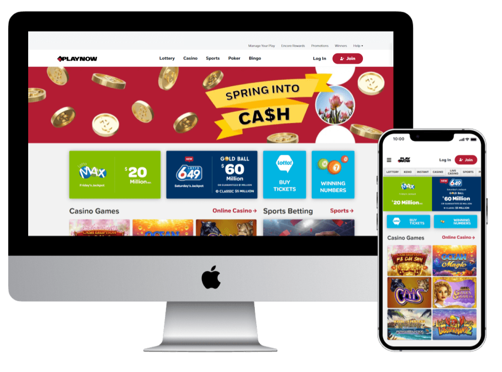
PlayNow.com — modernizing a billion-dollar engine.
A multi-year platform rebuild across lottery, casino, and sports betting. Three businesses sharing one header — fixed by treating design as an operating system, not a coat of paint.
Open case file
Keno — pacing, clarity, and the rhythm of a draw game.
Reworked a legacy product without spooking its loyal players. Doubled engagement and lifted revenue 68% by treating the four-minute draw cycle as the actual UX surface.
Open case file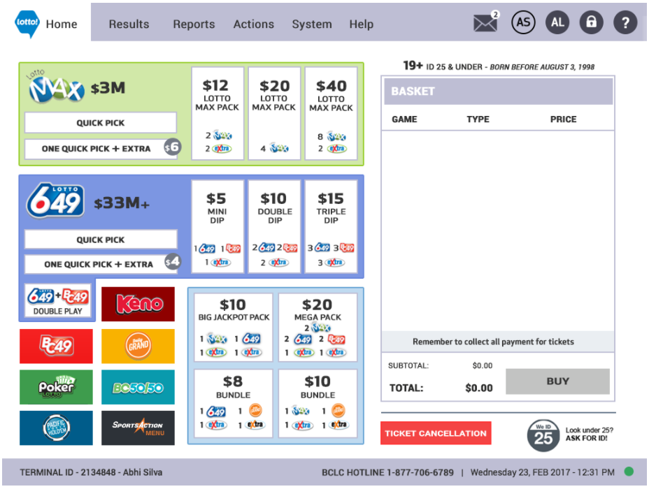
Retail Terminal — the unglamorous UX everyone touches.
Province-wide redesign of the point-of-sale software running on every BC lottery counter. Faster transactions, lower training load, and one fewer reason to be afraid of the line behind you.
Open case file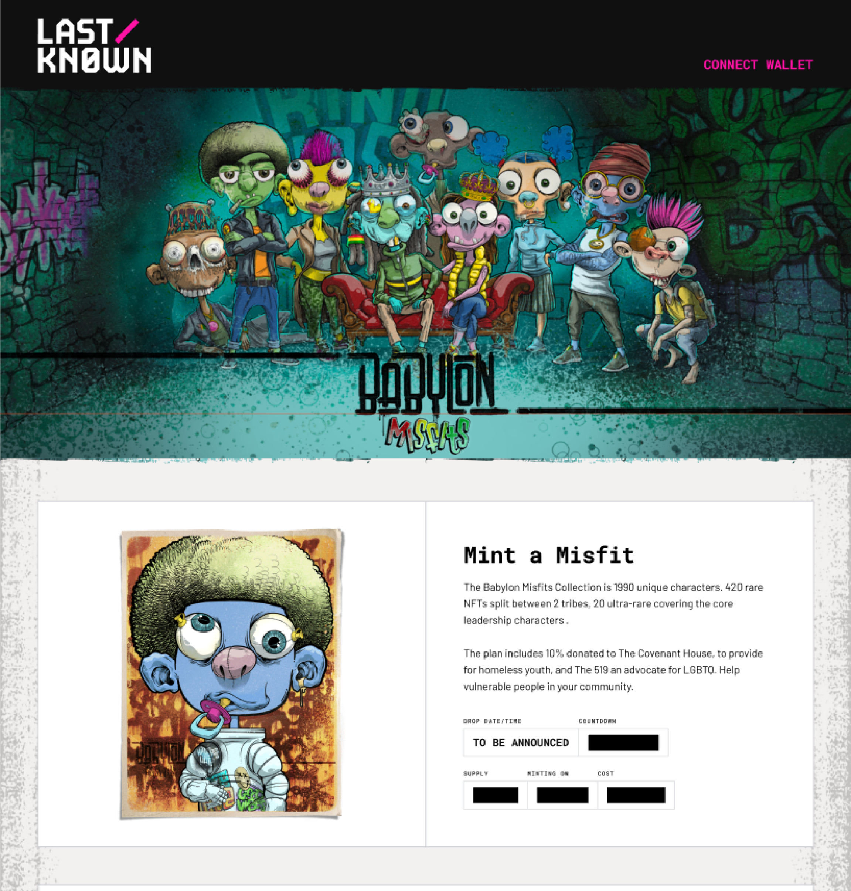
LastKnown — a trust-first NFT marketplace.
Launched the platform that hosted Billion Buns — 888 pieces of digital art that moved fast. The harder problem wasn't aesthetics; it was making confusing crypto flows feel inevitable.
Open case fileA few flashy old ones.
Selected work from the Blast Radius / agency years — back when sites were either Flash or fighting it. Stills only; the originals are long gone.
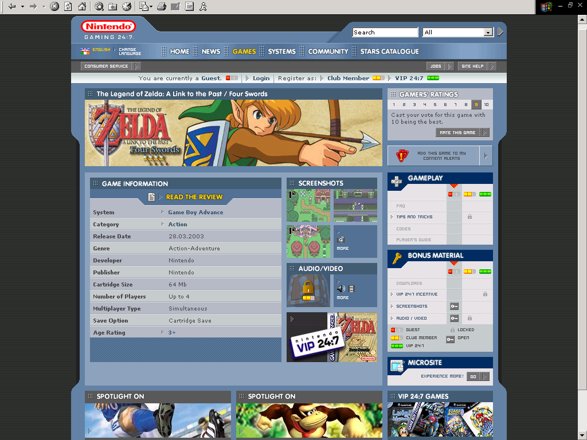
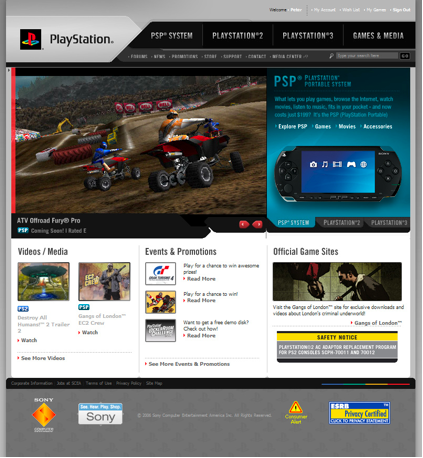
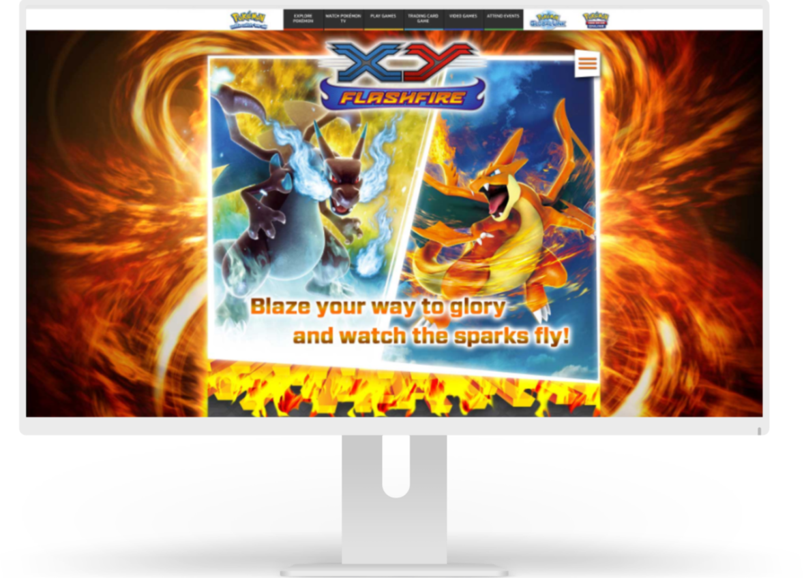
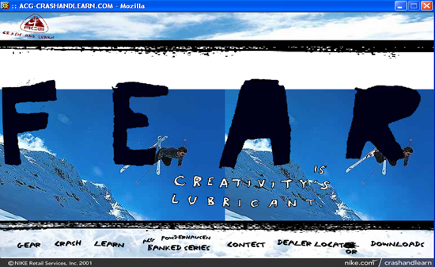
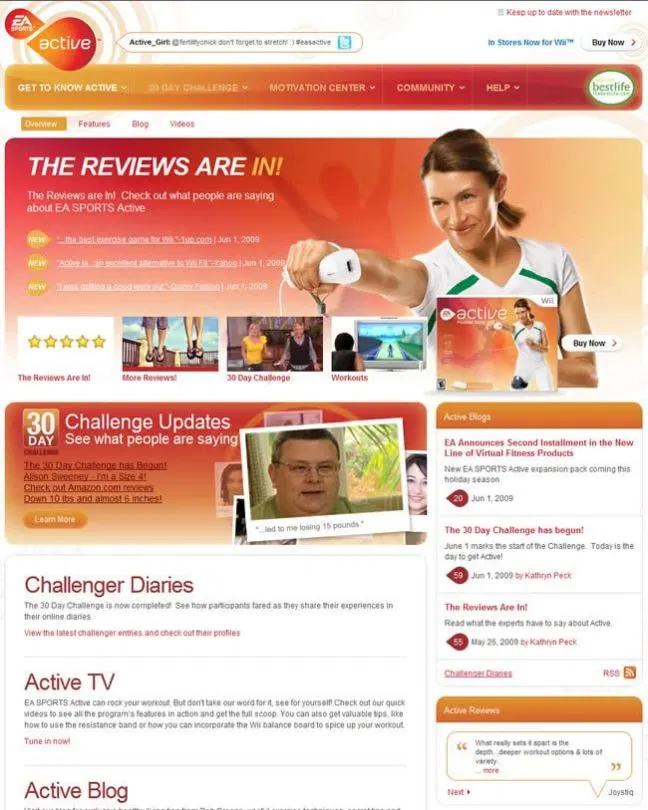
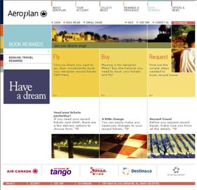
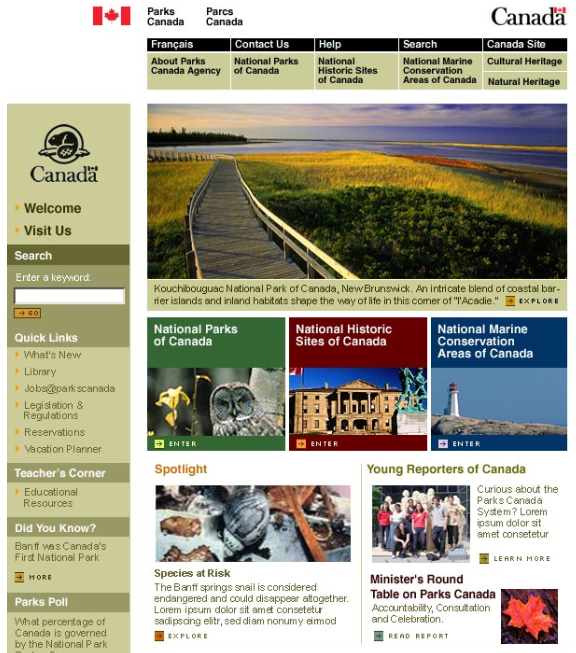
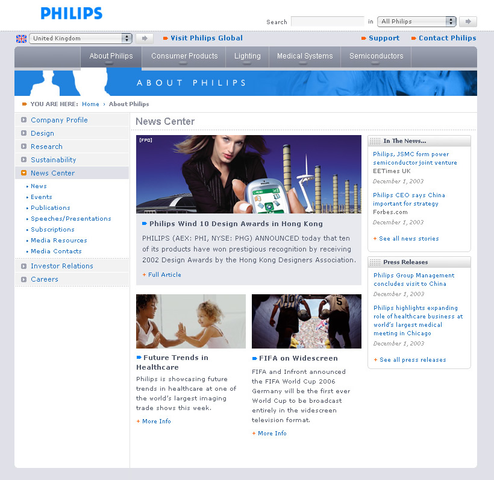
Twenty years of good company.
Currently open to Director / Head of UX roles where the work is real.
Best when the system is old, the rules are real, and the outcome actually matters. Vancouver, on-site, hybrid, or remote — happy to talk.
peter.jubb@gmail.com